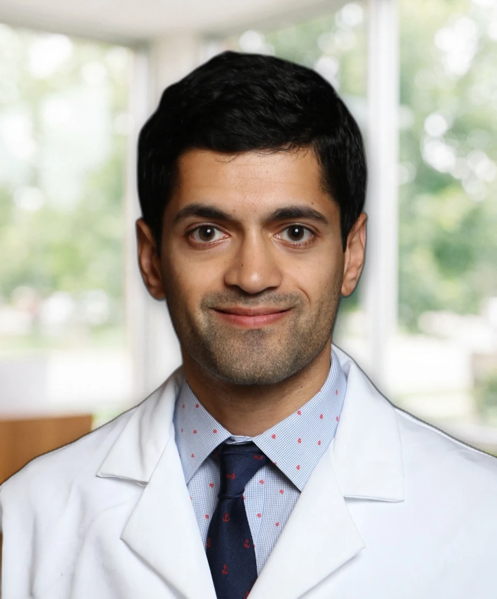
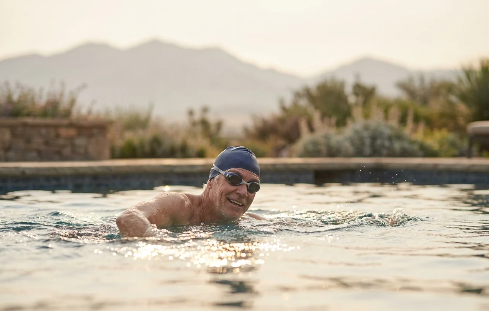

Hari Sawkar, MD
Board-certified urologist · Chief of Urology, Providence St. Joseph Hospital
Dr. Sawkar cares for men and women across the full range of urologic conditions, with a focus on minimally invasive treatment of the prostate, kidney stones, and urologic cancers. He performs more Aquablation procedures for enlarged prostate than any other surgeon in Orange County.
Background
Dr. Sawkar studied biomedical engineering at George Washington University, graduating magna cum laude, before earning his medical degree at Northwestern University's Feinberg School of Medicine. He completed his urology residency at the University of Southern California and LA General Medical Center, one of the busiest and most complex training programs in the country, where he trained across the full spectrum of urologic disease.
He practices in Orange County and serves as Chief of Urology at Providence St. Joseph Hospital, and has published peer-reviewed research and presented at national conferences. He works closely with each patient through the entire course of care, from the first consultation to full recovery.
Education and credentials
Operating at Providence St. Joseph Hospital · Pavilion Surgery Center · Surgicare of La Veta

Outside the office
Away from the practice, Dr. Sawkar is an avid runner, hiker, snowboarder, and cyclist throughout Southern California. That commitment to staying active shapes how he approaches treatment: he favors methods that limit downtime and return patients to their routines as quickly as the condition allows.
What he treats
Dr. Sawkar treats the full range of urologic conditions in men and women. When a less invasive option can achieve the same result, it is the one he recommends.

Ready to meet Dr. Sawkar
New patients are welcome, with same-day and next-day appointments for urgent concerns. Most major insurance plans are accepted, and an initial consultation can be done by telehealth. For the fastest response, send the office a secure message; the reply comes back by text.
Chief of Urology, Providence St. Joseph Hospital · UroLift Center of Excellence · Orange County's highest-volume Aquablation surgeon